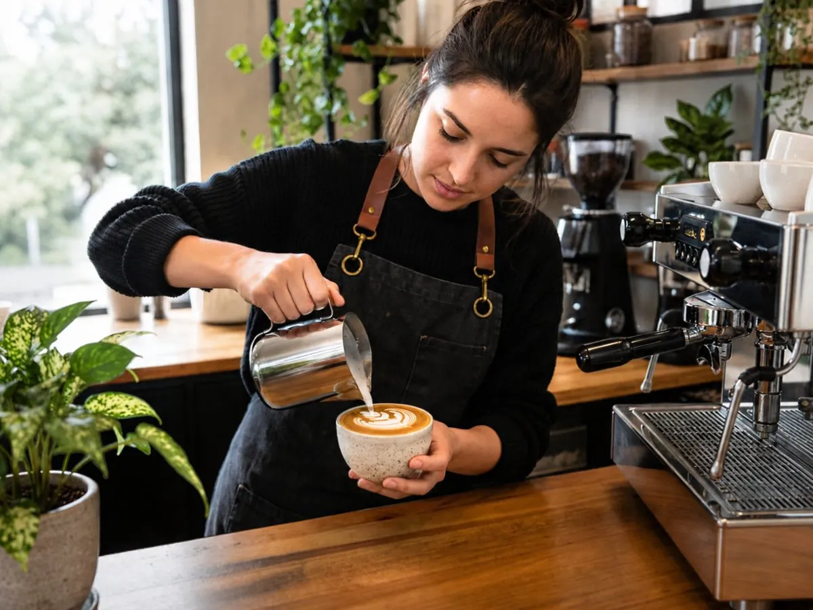

De 10 beste koffiebars in Nijmegen
Bijgewerkt op 20 november 2026.
Nijmegen is een echte koffiestad geworden. Je drinkt er specialty coffee van wisselende branderijen, Zweedse fika in de Van Broeckhuysenstraat, een flat white tussen de racefietsen en een cappuccino in de schaduw van de Stevenskerk. Wij liepen de koffiebars uit onze bedrijvengids na en kozen er tien die elk iets eigens hebben. Per zaak lees je waarvoor je er moet zijn, wanneer ze open zijn en of je er kunt werken.

Zo hebben we gekozen
We zijn begonnen bij de koffiebars in onze bedrijvengids en de lunchrooms waar koffie de hoofdrol speelt. In oktober 2026 hebben we hun websites en menukaarten nagelopen. Kroegen die in de lijst stonden, zaken die dicht zijn en zaken waar we te weinig over vonden, vielen af. Uit de rest kozen we tien koffiebars die elk iets bijzonders hebben, verspreid over de binnenstad, Oost en de Hazenkamp. De volgorde is geen ranglijst, en geen van deze zaken heeft voor een plek betaald.
1. Puck Specialty Coffee: voor de echte koffieliefhebber
Bij Puck in de Van Welderenstraat staat de koffie zelf centraal. Ze schenken er elke week andere bonen van verschillende branderijen, dus twee keer dezelfde kop drink je hier zelden. De barista's vertellen je graag waar de bonen vandaan komen. Drink je geen koffie, dan is er thee, chai, matcha, slowjuice of huisgemaakte limonade.
Tot 15.00 uur kun je ontbijten en lunchen, met Turkish eggs, french toast van Fries suikerbrood en zuurdesemtoast. Er zijn vegan opties en glutenvrij brood. Wil je het zelf leren? Puck geeft baristaworkshops, van een goede espresso tot latte art. Elke dag open van 9.00 tot 17.00 uur.
Goed voor: koffienerds en iedereen die eens iets anders wil proeven dan de vaste huisblend.
2. Fika: Zweedse koffiepauze, ook met kinderen
Fika is het Zweedse woord voor even pauzeren met koffie, iets lekkers en gezelschap, en dat is precies wat je hier doet. Bij de koffie horen kanelbulle en kladdkaka, en voor de lunch bestel je smørrebrød: rijk belegde boterhammen op desembrood die je zelf combineert. Vanaf 15.00 uur kun je ook borrelen.
Kinderen hebben een eigen kaart en in de boekenkast liggen spelletjes en puzzels. Wil je werken, ga dan doordeweeks naar de gratis flexwerkruimte ernaast; in het lunchcafé zelf blijft de laptop tussen 12.00 en 15.00 uur dicht. In de kiosk haal je koffie om mee te nemen en snuffel je tussen lokale producten en vintage. Elke dag open van 9.00 tot 18.00 uur.
Goed voor: gezinnen, thuiswerkers en wie houdt van Scandinavisch gebak.
3. Philipse: koffie in de schaduw van de Stevenskerk
Mooier dan bij Philipse zit je in Nijmegen nauwelijks. De koffiebar zit in een van de oude Kanunnikenhuisjes rond de Stevenskerk, en binnen voelt het als een huiskamer, met plaatjes op de pick-up. Op warme dagen houdt de kerk het terras lekker koel.
Je komt hier voor koffie, een lunch of een uitgebreide high tea, met lekkernijen die ze zelf maken. Twee deuren verder zit vintagewinkel TOV, dus je kunt meteen nog even rondneuzen. Philipse is open van dinsdag tot en met zaterdag vanaf 10.30 uur, op zondag vanaf 12.00 uur, en op maandag dicht.
Goed voor: een rustig moment in het centrum, en een high tea op een bijzondere plek.
4. Crossroads Cycling Culture: koffie tussen de racefietsen
Aan de Daalseweg staat de koffiebar midden in een fietswinkel. Je drinkt er specialty coffee van Single Estate Coffee Roasters, met een broodje, lunch of taart. Kom je op de fiets, dan zet je hem veilig binnen, en er is zelfs een douche die iedereen mag gebruiken.
Je hoeft geen wielrenner te zijn: buurtbewoners zijn net zo welkom. Ben je het wel, dan sluit je gratis aan bij een van de wekelijkse social rides en drink je daarna samen koffie, terwijl je fiets in de werkplaats wordt nagekeken. Open van dinsdag tot en met zaterdag, van 9.00 tot 17.00 uur.
Goed voor: fietsers op weg naar of terug van de Ooijpolder, en bewoners van Oost.
5. Bairro Alto: picknickmand voor het park
Aan de Kannenmarkt kijk je uit op een groen stadsparkje, en daar speelt Bairro Alto handig op in. Met mooi weer stel je aan de bar of online een picknickmand samen, met bijvoorbeeld açaibowls, salades, broodjes, cake en sapjes. Je krijgt er een kleedje bij en loopt zo naar het parkje, de Waal of het Kronenburgerpark.
Binnen begin je de dag met ontbijt of een kop koffie met taart uit de eigen bakkerij. Moet je werken, dan schuif je aan in Bairro's Buro naast de deur, waar je via een QR-code bestelt. Reserveren kan niet; je bent elke dag welkom van 8.30 tot 17.00 uur.
Goed voor: zonnige dagen en een werkplek in de binnenstad.
6. De Kantine: verstopt op het Splendorterrein
De zus van Bairro Alto vind je alleen als je weet waar je moet zijn: via een smal straatje vanaf de Groenestraat kom je op het Splendorterrein. Binnen is het huiselijk, en met mooi weer zit je in het tuintje. De taarten en cakes komen uit de bakkerij hiernaast.
Tot 12.00 uur ontbijt je met açai of yoghurt met huisgemaakte granola. Daarna gaat de lunchkaart open, met avocadotoast, een kimchi-tosti en een brioche met pulled oesterzwam. Veel staat er vegetarisch op de kaart, en aan het eind van de middag bestel je oesterzwambitterballen bij de borrel. Elke dag open van 8.30 tot 17.00 uur.
Goed voor: vegetariërs en wie een rustig plekje buiten het centrum zoekt.
7. Koffiebar Toos: goede koffie met een goed doel
Bij Toos in Nijmegen-Oost drink je een prima cappuccino en doe je ondertussen iets goeds. In dit kleine koffiehuis werken jongvolwassenen die even zijn vastgelopen, als volwaardige collega's. Je kunt er ook een uitgestelde koffie kopen voor iemand die het goed kan gebruiken.
Op de kaart staan yoghurt- en smoothiebowls, een soep van de week en een hele rij tosti's, van kimchi tot brie met zelfgemaakte pesto. Voor zoet is er huisgemaakte taart, ook vegan en glutenvrij. Toos is vijf dagen per week open, en je koffie gaat ook mee voor onderweg.
Goed voor: wie met zijn koffie een lokaal initiatief wil steunen.
8. Kushiin: matcha en een halal lunch
Kushiin heeft Afrikaanse roots en een Nederlandse inslag, en dat proef je. Naast koffie is de matchabar een reden om te komen, en voor de lunch zijn er hartige broodjes, frisse salades en pastries. Alles wordt vers gemaakt en is halal.
Je kunt er uitgebreid blijven zitten, maar je kunt je lunch ook online bestellen en dezelfde dag ophalen. Lekker gevonden? De koffiebonen, matcha en hojicha van Kushiin zijn ook te koop voor thuis.
Goed voor: matchaliefhebbers en wie halal wil lunchen in de binnenstad.
9. Anne&Max: ontbijt in een monumentaal pand
In de Lange Hezelstraat, de oudste winkelstraat van Nederland, zit Anne&Max in een monumentaal pand met hoge ramen en veel daglicht. Je begint er de dag met specialty coffee en een croissant of een uitgebreid ontbijt, en blijft hangen voor de lunch.
Bij mooi weer zit je op het terras, en de Waal en het Kronenburgerpark liggen om de hoek. Iets te vieren? Dan bestel je een high tea. Anne&Max is elke dag open van 8.00 tot 17.00 uur en is daarmee een van de vroegste koffieadressen in de binnenstad. Afhalen en laten bezorgen kan ook.
Goed voor: een vroeg ontbijt voordat je de stad in gaat.
10. Doppio Espresso: even weg van de drukte op Plein 1944
Midden in het winkelgebied, aan Plein 1944, zit de Nijmeegse vestiging van Doppio Espresso. De sfeer is Italiaans geïnspireerd: koffie die met aandacht gezet wordt, met daarbij ontbijt, lunch, smoothies en iets zoets.
Het is een handige plek om tussen het winkelen door op adem te komen, af te spreken of een uurtje met je laptop te werken. Doppio is elke dag open van 8.30 tot 18.00 uur, dus ook op zondag en na een middag shoppen kun je hier nog terecht.
Goed voor: een koffiepauze tijdens het winkelen, ook op zondag.
Koffiebonen kopen in Nijmegen
Wil je de koffie thuis net zo lekker zetten? Deze adressen branden zelf.
- Holy Beans: brandt elke week kleine partijen van vijf kilo in de Commanderie van Sint Jan aan de Franseplaats, een klooster uit 1196. Er zijn drie vaste brandingen, uit Colombia, Ethiopië en Brazilië, en binnen Nijmegen bezorgen ze op de fiets.
- Blommers Coffee: de branderij aan Het Loog brandt specialty bonen voor filter en espresso en verkoopt ook malers en machines. Een kop drinken doe je in de cafés van Blommers, onder meer aan de Lange Hezelstraat.
- Kushiin verkoopt zijn bonen, matcha en hojicha ook voor thuis.
Ook leuk voor een kop koffie
- Café Velocitas: koffie met een gevulde koek tussen de oude rijwielen van fietsmuseum Velorama aan de Waalkade.
- Puux: wijklunchcafé op de Hazenkamp met biologische producten, zelfgebakken gebak en ambachtelijk ijs.
- Loek: koffie en lunch op het zonnige terras op de hoek van het Faberplein.
Zelf barista worden? Lees ons artikel over baristatrainingen in Nijmegen. Zin in meer dan koffie? Bekijk de beste lunchplekken en de mooiste high tea-locaties. Alle koffiebars staan in de bedrijvengids onder koffiebars.
Meer in onze gids lunch, ontbijt en high tea in Nijmegen.
Veelgestelde vragen
Waar drink je de lekkerste koffie in Nijmegen?
Dat is smaak, maar voor specialty coffee ga je naar Puck Specialty Coffee in de Van Welderenstraat, met elke week andere bonen, of naar Crossroads Cycling Culture aan de Daalseweg, met koffie van Single Estate Coffee Roasters.
Waar kun je in Nijmegen met je laptop werken in een koffiebar?
Fika heeft doordeweeks een gratis flexwerkruimte naast het lunchcafé, en naast Bairro Alto zit Bairro's Buro. Ook bij Doppio Espresso aan Plein 1944 kun je met je laptop zitten. In het lunchcafé van Fika blijft de laptop tussen 12.00 en 15.00 uur dicht.
Welke koffiebars in Nijmegen zijn op zondag open?
Puck, Fika, Bairro Alto, De Kantine van Bairro Alto, Anne&Max en Doppio Espresso zijn elke dag open. Philipse is op zondag open vanaf 12.00 uur.
Waar ontbijt je vroeg in Nijmegen?
Anne&Max in de Lange Hezelstraat gaat elke dag om 8.00 uur open. Bairro Alto, De Kantine en Doppio Espresso volgen om 8.30 uur.
Waar koop je vers gebrande koffiebonen in Nijmegen?
Bij Holy Beans aan de Franseplaats, dat elke week kleine partijen brandt, en bij de branderij van Blommers Coffee aan Het Loog.